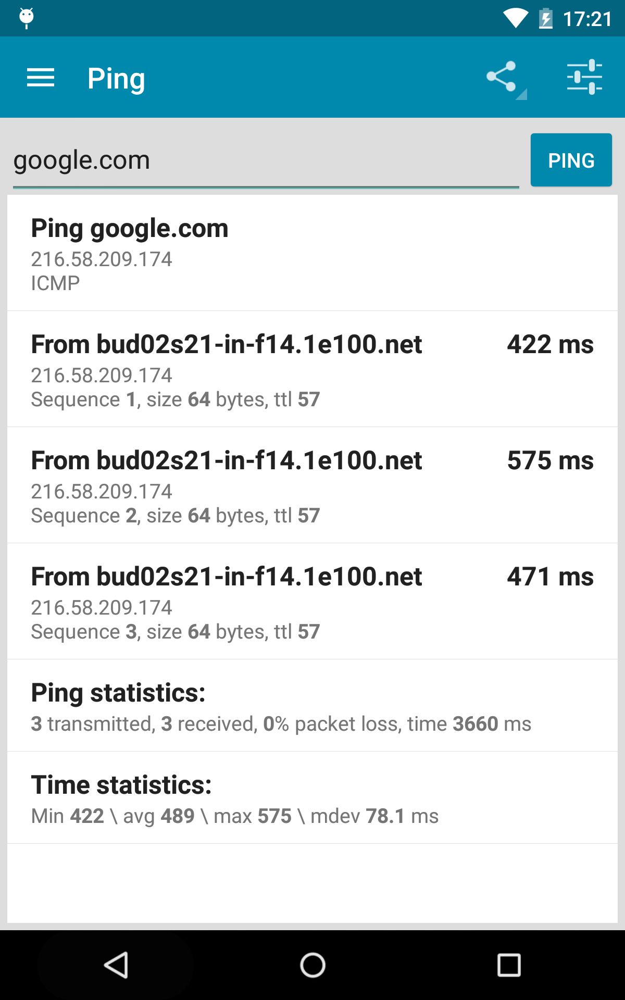
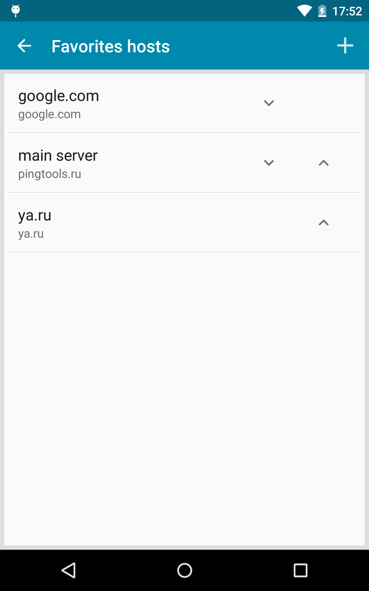

PingTools 全能力盘点：把安卓变成随身网络诊断台
PingTools 远不止一个 Ping 工具——从连通性巡检、端口扫描到流量统计和 Watcher 定时监控，盘点这款安卓网络工具箱的完整能力覆盖。
很多人对 PingTools 的印象还停留在"手机上的 Ping 命令行"——打开 App，输个域名，看延迟和丢包率。但如果你只把它当一个移动端 ping.exe 来用，其实只用到了它不到三分之一的能力。
这款安卓应用背后是一个完整的网络诊断工具箱——官网上列了二十多个独立工具，它把网络工程师在台式机上才能完成的大半日常工作，浓缩进了手机屏幕的几行列表里：连通性检测、端口扫描、Wi-Fi 勘查、流量追溯、定时巡检、数据导出……每一项单独拎出来都是一个能干活的工具，组合在一起就是一张覆盖从"家里 Wi-Fi 是不是出问题了"到"上线服务器端口为什么扫不通"的广谱诊断网。下面按能力域完整走一遍，看看它到底能替你省下多少次 SSH 到服务器上跑命令的时间。

连通性检测：从手动 Ping 到 24 小时 Watcher
连通性检测是 PingTools 的基础盘，但它把这个单项做了两层迭代。
第一层是 Ping 家族的基础三件套：普通 Ping、TCP Ping 和 HTTP Ping。普通 Ping 用 ICMP 协议测基础可达性；TCP Ping 对指定端口发 SYN 包，能看到真实的 TCP 连接状态——这在排查"端口扫描显示 Open 但连不上"的情况时特别有用；HTTP Ping 则直接对 URL 发 GET 请求，看响应码和首字节时间，等于把 curl 的前半段搬到了手机上。
第二层是收藏管理和 Watcher 定时巡检，这是把 Ping 从一个"临时动作"升级成"持续监控"的关键设计。你把常用目标存进 Favorites，给每个主机起个备注名（"主服务器""家路由""VPS"），下次选一下就行，不用每次敲域名。Watcher 则更进一步——每隔 N 分钟自动对一组主机跑 Ping，任何一个状态变化时响铃或推送通知，后台静默运行，重启后可恢复。对运维来说这意味着什么？一台放在家里或公司的安卓设备，装上 PingTools 就能顶一个简化版的 UptimeRobot，24 小时盯着你的服务器有没有掉线，发现问题第一时间推送到手机。

网络状态面板：谁在偷偷跑流量，Wi-Fi 里混了谁
如果说 Ping 是"单点探测"，那 Info 面板就是对当前网络环境的"全局快照"。
面板最实用的两个子功能是 Network usage 和 Wi-Fi Scanner。Network usage 以条形图和列表两种方式展示手机上每个应用的累计上传下载数据——这个功能的价值在蜂窝流量快用完的时候会立刻显现：打开就能看到是哪只 App 在后台偷偷同步大文件，关掉它的后台数据权限就行。Android 自带的流量统计只区分 Wi-Fi 和蜂窝，而且只有本月累计，PingTools 则按应用拆开、随时刷新看最新值，还能导出做报告。Wi-Fi Scanner 则列出附近所有 Wi-Fi SSID 的信号强度、信道、加密方式，排查"为什么我家 Wi-Fi 总是卡"的时候，一眼就能看到是不是有邻居在同信道上干扰。
这两个功能组合起来，其实能帮你定位不少家庭或办公室网络问题：流量异常 + Wi-Fi 列表里出现陌生 SSID，大概率就是路由器被蹭了。
端口安全与诊断：扫不通不一定是对方关了
PingTools 的端口扫描器在很多场景下比 nmap 更便携，但扫出来的结果怎么解读，是新手最容易踩坑的地方——PingTools文档里有专门讲防火墙与扫描结果解读的文章，把 Open / Filtered / Closed 三种状态的成因掰开揉碎了讲。
端口扫描的返回值只有三种：Open、Filtered、Closed。但每一种背后的原因可能完全不同。Open 但实际连不上？可能是服务器上的应用层防火墙主动发 RST 拒绝，也可能是服务有 IP 白名单而你的手机 IP 不在里面。Filtered 意味着发了 SYN 包后既没收到 SYN-ACK 也没收到 RST，直接超时——运营商封锁、企业防火墙、云服务商安全组、路由器 NAT 但端口没转发，任何一个中间设备丢包都会导致这个结果。Closed 但你明明开了服务？先检查服务是不是只监听 IPv6、是不是绑定了 127.0.0.1 回环地址、或者扫描器是不是开了太快的线程数把目标内核的半连接队列给冲了。
这些判断逻辑 PingTools 本身不会直接告诉你——但它提供了 TCP Ping 做交叉验证。端口扫描如果让你困惑，直接用 TCP Ping 对同一端口试一下，能看到真实的 TCP 连接状态，比批量探测更精确。这一点是它和很多"一键扫描"类工具的区别：不替你下结论，但给了你足够多的信号让你自己判断。
数据导出：CSV 比截图有用得多
所有工具的结果都可以导出成文本（TXT）或 CSV，这一点在实际工作中会被反复用到。
截图有几个天然劣势：不能二次分析、信息密度低、容易截错。CSV 则完全相反——Ping 导出的列头是 timestamp,host,ip,sequence,delay_ms,size,ttl，用 Excel、WPS 或 Python pandas 打开后，可以按时间排序画延迟趋势折线图、按主机分组做丢包率分布直方图、多主机结果合并对比。Watcher 的历史记录还有一个批量导出功能，把所有监控主机的历史一次性导出到一个 CSV，直接就能喂给 Grafana 或 Prometheus 做可视化看板。
导出文件默认保存在应用的内部存储目录，Android 11+ 的分区存储机制下如果提示权限不足，去系统设置里给 PingTools 开"所有文件访问"或者选仅存内部存储再手动复制出去就行。
短板也要说
PingTools 是个功能全面的工具，但它的局限也很明确。
首先，很多高级功能需要授予特殊权限——Network usage 需要"使用情况访问"权限、导出可能需要"所有文件访问"权限、定时后台运行需要忽略电池优化。这些都是 Android 系统层面的限制，PingTools 本身无法绕过，每次系统重置权限后还要手动重新开。其次，端口扫描和 Traceroute 这类深度诊断工具的结果有很强的上下文依赖——运营商封锁、NAT 类型、目标服务器的安全策略都会影响结果解读，App 只负责给你原始数据，判断还得靠你自己的经验。最后，免费版有一定的功能限制，Watcher 的监控数量、扫描线程数等参数在 Pro 版里才有完整开放——完整版可以从官方下载获取。
什么样的人该用它
如果你是以下几类人，PingTools 值得装在手机上长期留着：
运维或站长：手机上随时能查服务器通不通、端口有没有开掉，Watcher 定时巡检能当一个轻量级的在线监控用，不用再在 VPS 上装一堆监控组件。
网络爱好者或学生：做网络实验、学 TCP/IP 协议的时候，PingTools 把命令行工具的体验搬到了触屏上，对比不同网络环境下的 Ping 行为、观察端口扫描的三种状态，都是很好的动手学习素材。
普通用户排查家庭网络：家里 Wi-Fi 突然卡了、蜂窝流量莫名其妙快用完了、怀疑路由器被蹭了——打开 PingTools 查一下 Wi-Fi 列表和流量统计，几分钟内就能定位问题。
这套资料在三个仓库都能拿到，文档维护同步更新、国内访问也方便：主仓库放在GitHub，Gitee 和 GitCode 上也各自有一份镜像，按你习惯的平台选就行。